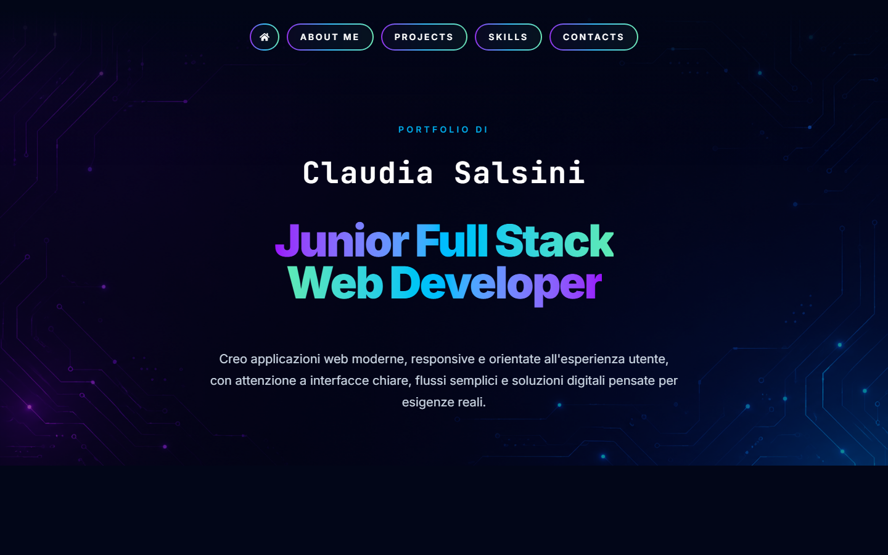
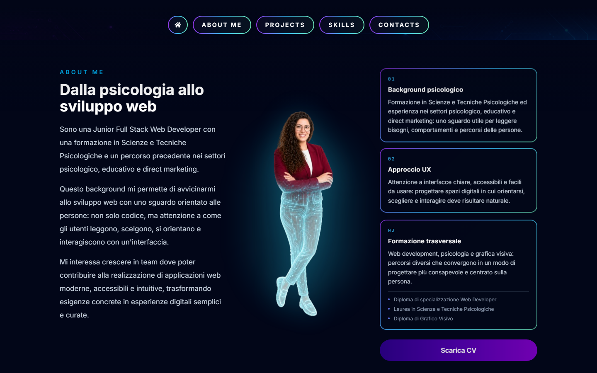
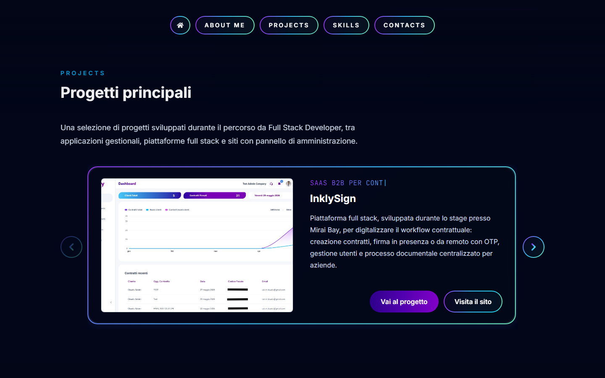
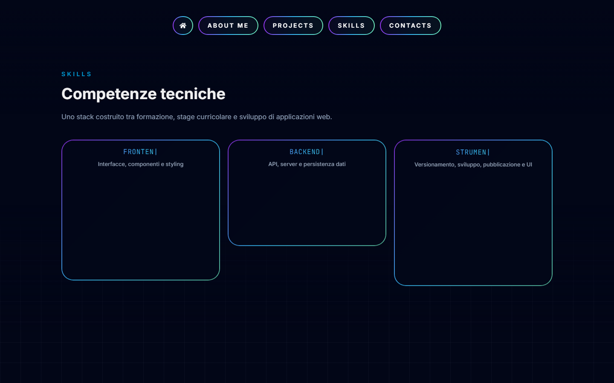
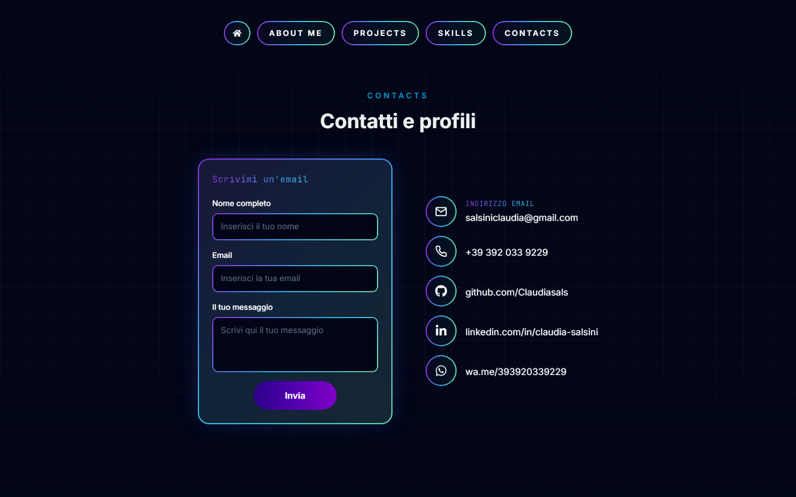
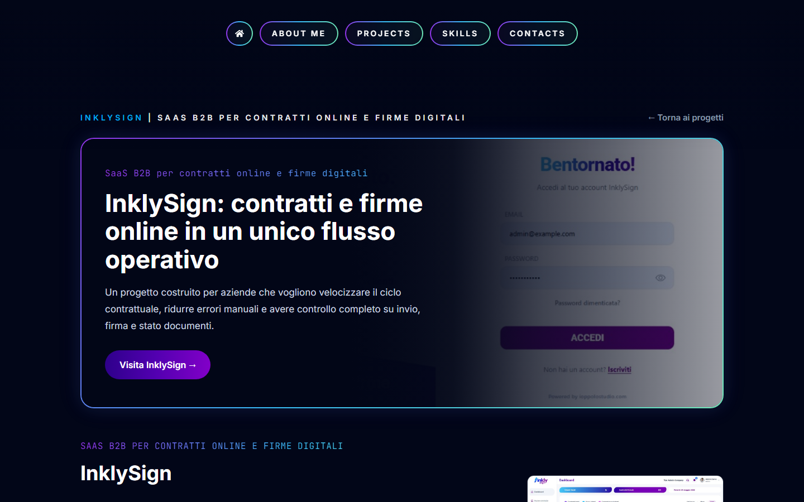
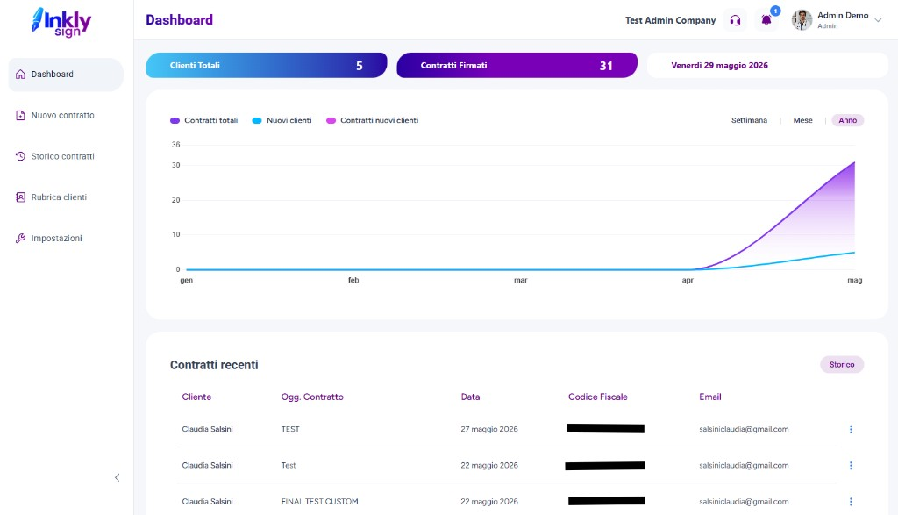
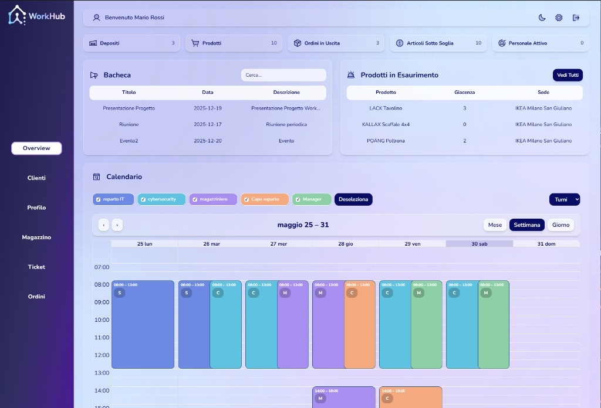
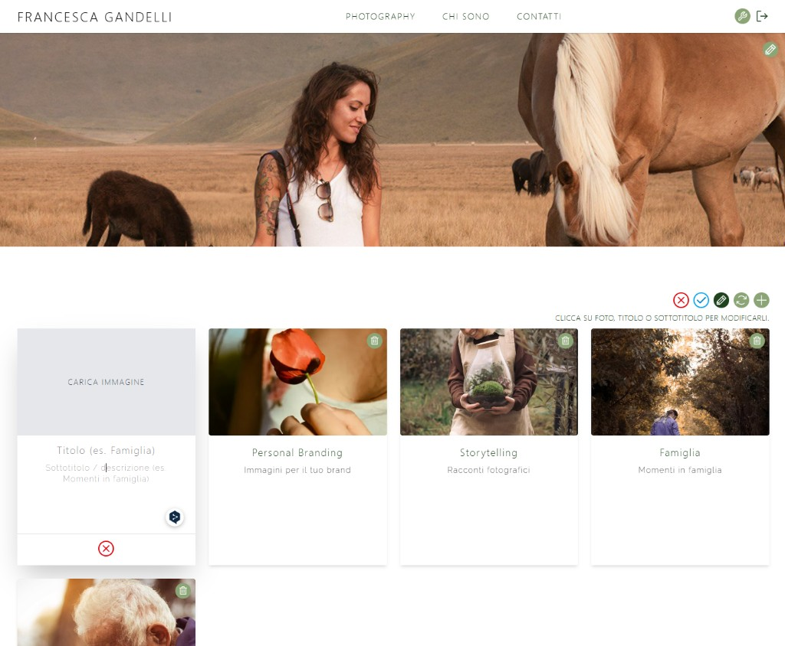

Claudia Salsini — Portfolio
Portfolio personale di Claudia Salsini, Junior Full Stack Web Developer.
Sito one-page con case study dedicati, sezione competenze tecniche, form di contatto e pagine legali.

Indice
- Panoramica
- Anteprime
- Funzionalità
- Stack tecnologico
- Progetti in evidenza
- Struttura del repository
- Avvio in locale
- Build e deploy
- Contatti
Panoramica
Il portfolio presenta il percorso professionale di Claudia — dalla formazione in psicologia allo sviluppo web — attraverso un’interfaccia scura, moderna e responsive, con animazioni leggere e attenzione all’esperienza utente.
Sezioni principali
| Sezione | Contenuto |
|---|---|
| Hero | Presentazione e value proposition |
| About Me | Background, approccio UX, formazione, download CV |
| Projects | Carousel dei progetti principali con link a demo e repository |
| Skills | Competenze tecniche organizzate per area (Frontend, Backend, Tools) |
| Contact | Form mailto, email, telefono, GitHub, LinkedIn, WhatsApp |
Sono incluse anche pagine di Privacy, Cookie e Termini, oltre a case study dettagliati per i singoli progetti.
Anteprime
Hero
About Me

Projects

Skills

Contact

Case study — InklySign

Funzionalità
- Routing SPA con React Router (home, case study, pagine legali)
- Scroll animato verso le sezioni con offset per navbar fissa
- Reveal on scroll a cascata sulle sezioni principali
- Effetto griglia con spotlight al passaggio del mouse (Skills + Contact)
- Cursore personalizzato su elementi interattivi
- Carousel progetti orizzontale con navigazione
- Card competenze con bordi gradiente e mini-card per ogni tecnologia
- Form di contatto via
mailto:con precompilazione del messaggio - Etichette con effetto digitazione (JetBrains Mono + gradiente)
- Design responsive per desktop, tablet e mobile
- Supporto
prefers-reduced-motionper animazioni ridotte
Stack tecnologico
| Area | Tecnologie |
|---|---|
| Frontend | React 19, React Router, Vite 8, Tailwind CSS 4 |
| UI / UX | CSS custom, Inter, JetBrains Mono, React Icons, Devicon |
| Backend (progetti correlati) | Node.js, Express, PHP, Laravel |
| Database | MySQL, MongoDB Atlas |
| Tooling | ESLint, npm |
| Deploy | Netlify (SPA redirect via _redirects) |
Progetti in evidenza
| Progetto | Descrizione | Link |
|---|---|---|
| InklySign | SaaS B2B per contratti online e firme digitali | inklysign.it |
| WorkHub | Gestionale interno full stack | GitHub |
| Francesca Gandelli | Portfolio fotografico con pannello admin | Demo |
Anteprime incluse nel sito:



Struttura del repository
claudia-salsini-portfolio/
├── docs/
│ └── screenshots/ # Anteprime per README e documentazione
├── public/
│ ├── images/ # Asset statici (hero, about, progetti)
│ └── cv-claudia-salsini.pdf
├── scripts/
│ └── capture-readme-screenshots.mjs
├── src/
│ ├── components/ # UI riutilizzabili (Hero, About, Projects, Skills, Contact…)
│ ├── data/ # Progetti e categorie skill
│ ├── hooks/ # Scroll spotlight, typing label
│ ├── pages/ # Home, legal, case study progetti
│ ├── utils/
│ ├── App.jsx
│ └── index.css # Stili globali e componenti
├── index.html
├── vite.config.js
└── package.json
Avvio in locale
Requisiti: Node.js 18+ consigliato, npm
# Clona il repository
git clone https://github.com/Claudiasals/claudia-salsini-portfolio.git
cd claudia-salsini-portfolio
# Installa le dipendenze
npm install
# Avvia il dev server
npm run dev
Apri l’URL indicato in terminale (di default http://localhost:5173).
Script disponibili
| Comando | Descrizione |
|---|---|
npm run dev |
Server di sviluppo con HMR |
npm run build |
Build di produzione in dist/ |
npm run preview |
Anteprima locale della build |
npm run lint |
Controllo ESLint |
Rigenerare gli screenshot del README
Con il dev server avviato:
npx playwright install chromium
node scripts/capture-readme-screenshots.mjs
Opzionale: imposta un URL diverso con SCREENSHOT_BASE_URL=http://localhost:5173 node scripts/capture-readme-screenshots.mjs.
Build e deploy
npm run build
L’output viene generato nella cartella dist/.
Il file public/_redirects gestisce il routing SPA su Netlify (/* → /index.html).
Contatti
Claudia Salsini — Junior Full Stack Web Developer
- Email: salsiniclaudia@gmail.com
- GitHub: @Claudiasals
- LinkedIn: claudia-salsini
- WhatsApp: +39 392 033 9229
Realizzato con React, Vite e Tailwind CSS.